🦉 Owl Capital 아침 브리핑
2026년 10월 22일 (목) · 06:06 KST 생성
아침 대시보드
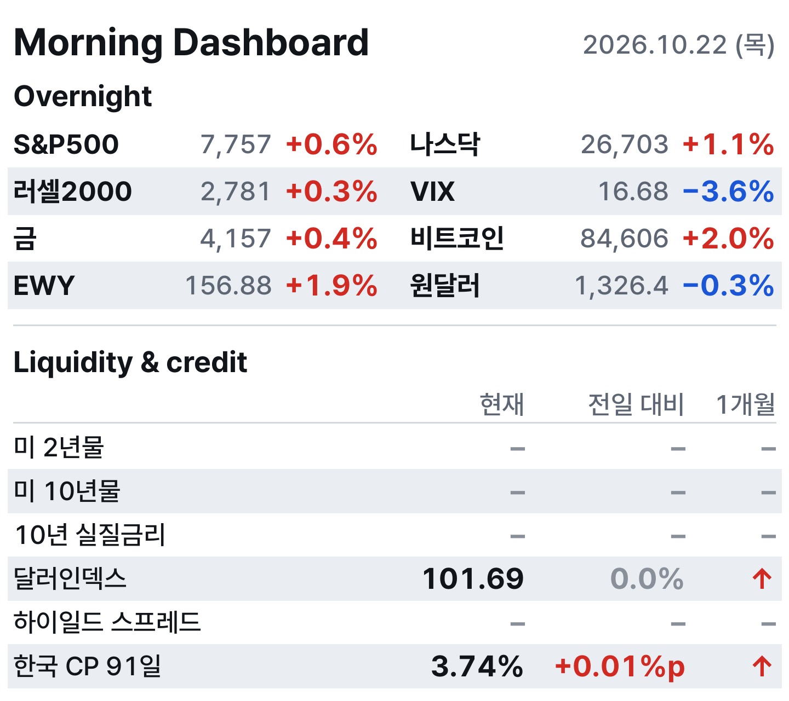
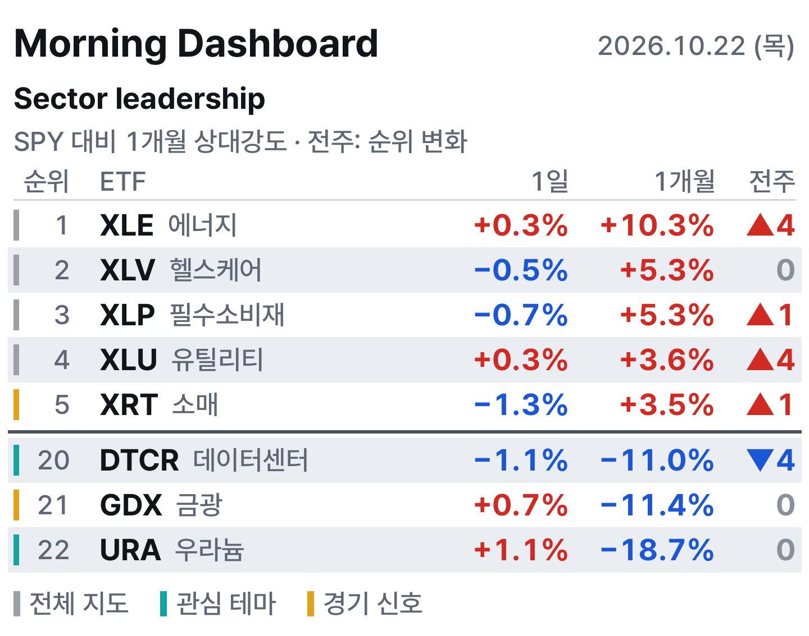
섹터 전체표
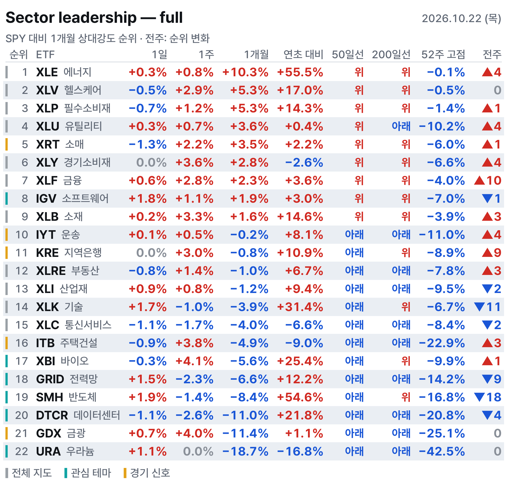
1Fear & Greed
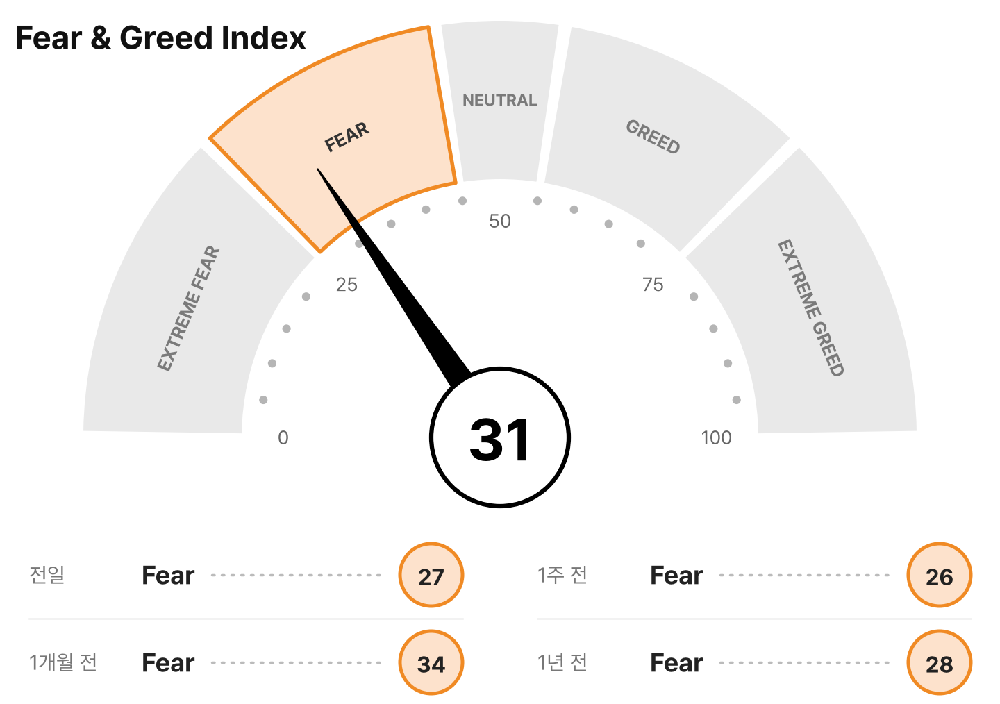
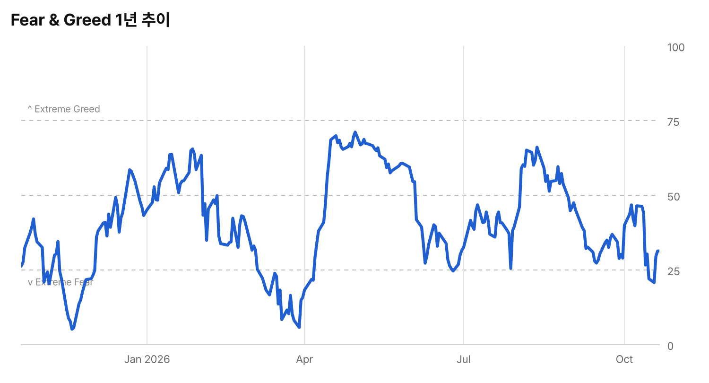
2블로그 새 글 (최근 24시간)
블로그 새 글 12건
메르의 블로그 (2건)
피우스의 책도둑 & 매거진 (9건)
- [스펜서 자캅] 수요와 공급: 이번 주식 시장 거품을 무너뜨릴 기폭제
- [오늘의 차트] AI 데이터센터 폭발적 증설과 모듈화 혁신, 그리고 '전력망'이라는 걸림돌
- [CWS 주간 미국 시장 리뷰] AI 열풍 흔들림과 주택 시장 악재 심화... 침체 경고등 켜진 미 증시
- 벤저민 그레이엄, '미스터 마켓'을 활용하는 지혜
- 'AI 멀리했다 손실' 액티브 매니저들, AI주 주춤에 반등 기회 노린다
- 세계 최대 컨테이너 항만 현황 및 지역별 핵심 허브 역할
- 역대급 S&P 500 강세장, 언제까지 지속될까?
- 투자 천재의 뜻밖의 취미: 저녁마다 유튜브를 즐기는 워런 버핏
- [마크 헐버트] 중간선거 직후 6개월, 왜 주식 시장은 강세를 보일까?
Rafiki Research (1건)
3핀비즈 S&P 500 히트맵
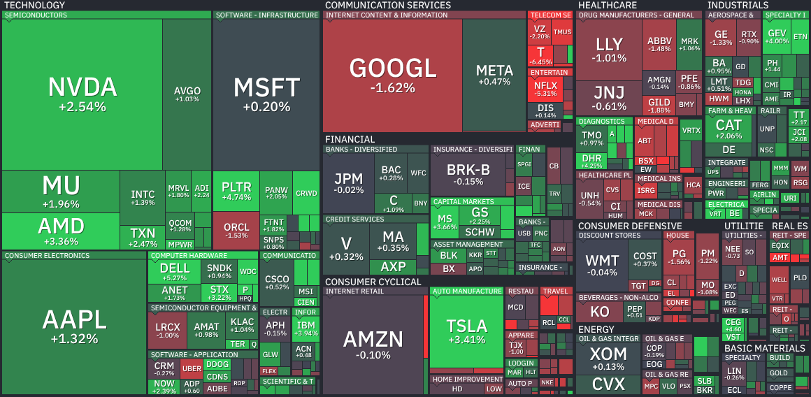
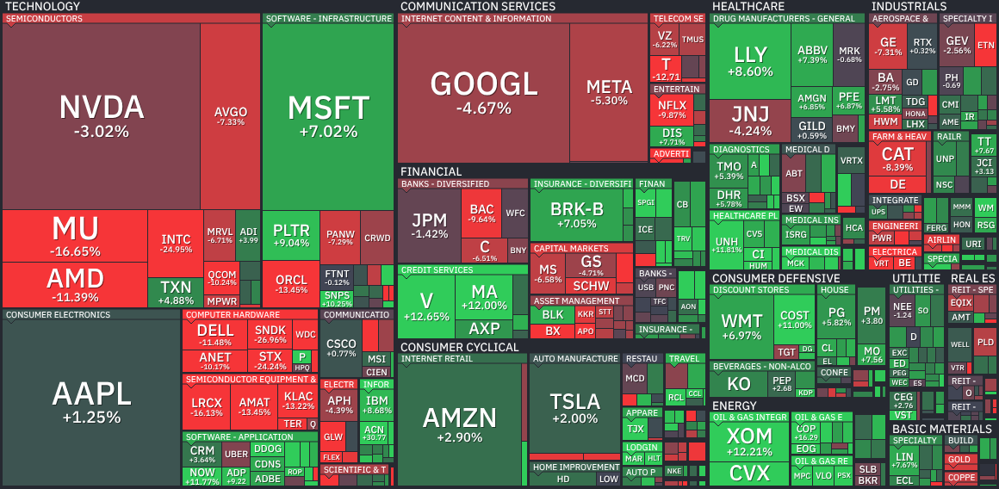
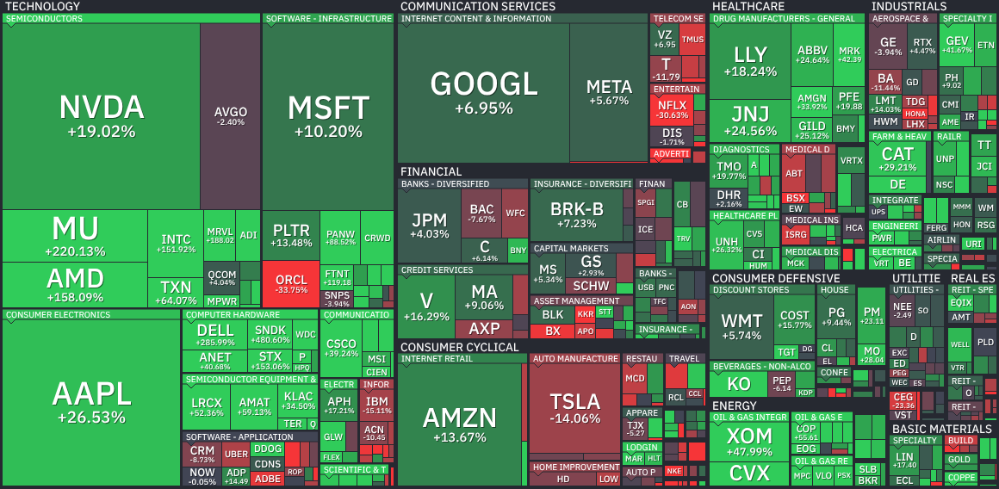
4미 천연가스
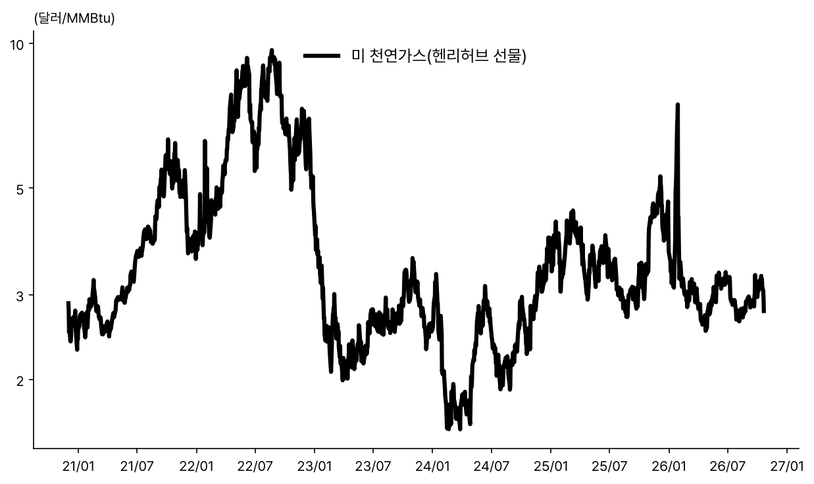
5차트
미 10Y-2Y 스프레드
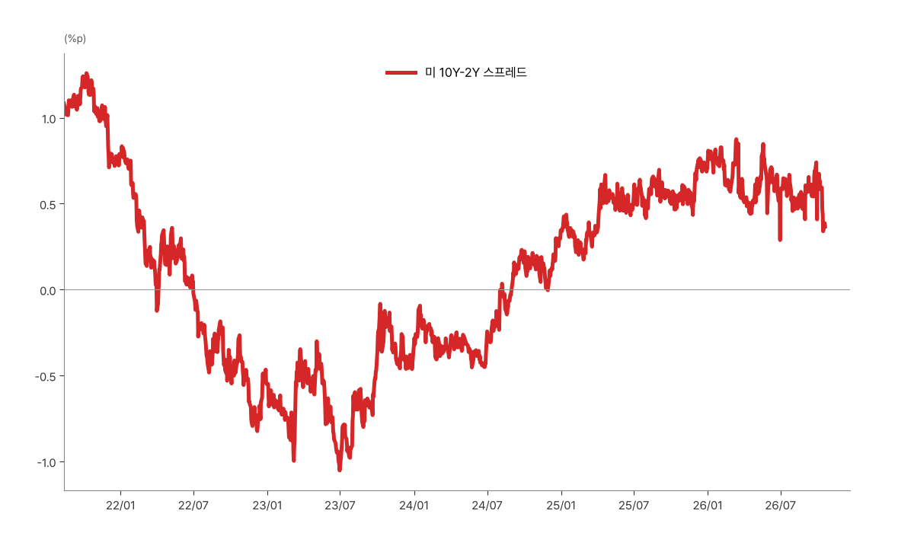
주요국 10년 국채금리
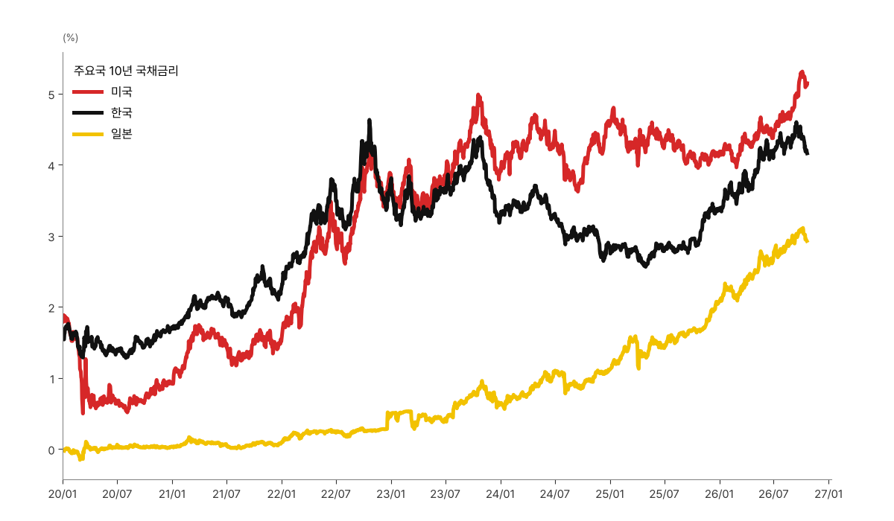
유가
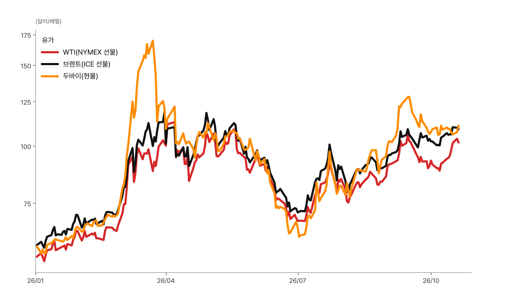
미 가솔린 소매가격
미 가솔린 소매가격 차트 생성 실패: 가솔린: FRED ParserError: Error tokenizing data. C error: Expected 1 fields in line 5, saw 3
데이터센터 ETF·엔비디아
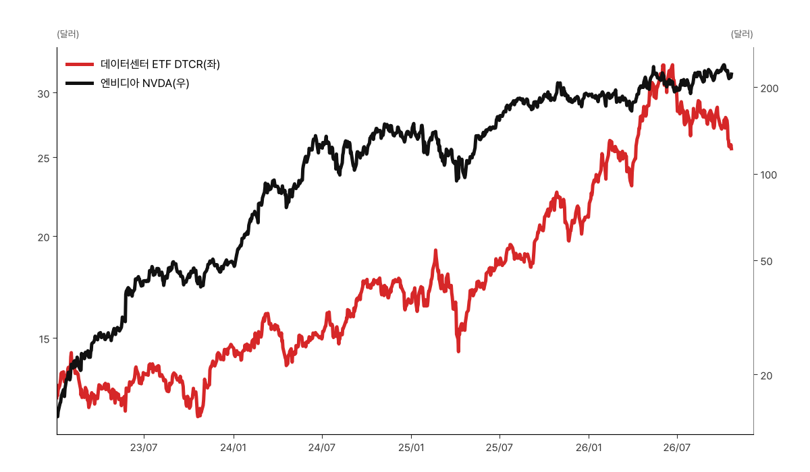
바이오테크·반도체 연초 대비
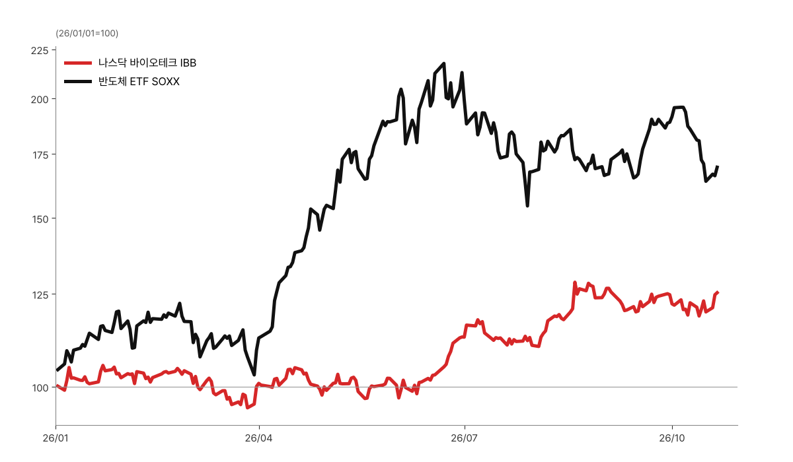
6메모리
DRAM ETF $47.72 (-1.3%, 10/20)
· 좌수 3억 9,154만좌 (-155만좌, 10/20)
SK하이닉스 2배(7709) HK$17.23 (-10.2%, 10/20)
· 좌수 11억 8,950만좌 (+2,900만좌)
삼성전자 2배(7747) HK$45.76 (-5.5%, 10/20)
· 좌수 1억 500만좌 (+250만좌)
DRAM 현물가(세션 평균)
DDR5 16Gb $60.867 (+0.28%)
DDR4 16Gb $83.117 (-0.30%)
DDR4 8Gb $46.786 (+0.93%)